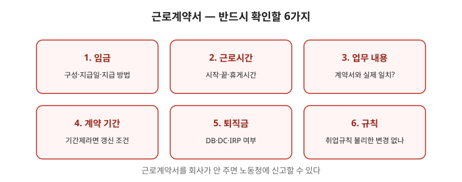

근로계약은 서명 전에 읽는 것이 유일한 방어입니다. 나중에 불리한 조항은 “몰랐다”로 되돌리기 어렵습니다. 이 글은 법정 기재사항부터 위험 문구·유형별 확인점·보관법까지 점검 순서대로 정리한 안내입니다. 개별 조항의 효력은 계약 내용과 실제 근무 실태에 따라 달라지므로 마지막 점검표까지 읽고 취업규칙 글·전문가 상담으로 확인하세요.

한눈에 보는 표 — 서명 전 4점검
| 점검 | 볼 것 | 위험 신호 |
|---|---|---|
| 기재사항 | 임금·시간·휴일·연차·장소·업무·휴게 서면 명시 | 구두만 있고 서면 미교부 |
| 위험문구 | 포괄·위약금·일방해고 조항 | “수당 포함”인데 시간 불명확 |
| 유형별 | 기간·갱신·도급실질 확인 | 갱신 조건 백지, 장소·업무 과도 포괄 |
| 보관 | 사본 보관 + 변경사항 문서화 | 사본 미교부, 명세서 미보관 |
1. 법이 요구하는 기재사항
- 임금, 소정근로시간, 휴일, 연차, 근로장소, 업무 내용, 휴게 등은 서면으로 명시해야 하는 사항입니다. 빠진 항목이 있으면 작성을 요구하세요.
- 서면 교부는 사업주 의무입니다. 구두로만 정하고 서면을 주지 않는 것은 그 자체로 문제가 될 수 있습니다. 받은 서면은 사진·스캔으로 백업하세요.
2. 자주 문제 되는 문구
- “포괄임금” “수당 포함” 문구는 실제 근로시간과 비교해야 합니다. 초과 근로가 상시적이면 다툼 대상입니다. 관련 글 근로시간 글의 비교표로 점검하세요.
- 근무 장소·업무 내용을 지나치게 넓게 적어 두면, 배치 전환·전직을 회사 재량으로 넓히는 근거가 됩니다. “회사 지정 장소” 같은 포괄 문구는 범위를 좁혀 적도록 요구하세요.
- 위약금·손해배상 예정 조항, 일방적 해고 조항은 효력이 제한됩니다. 그대로 두지 말고 확인을 요구하세요. 특히 “퇴사 시 ○○만원” 같은 문구는 문제 소지가 큽니다.
3. 계약 유형별 확인점
- 기간제라면 계약 기간, 갱신 조건, 갱신 거절 사유를 확인하세요. 반복 갱신은 갱신 기대권 문제로 이어집니다. 관련 글 기간제 보호 글을 함께 보세요.
- 도급·용역·파견이라는 이름과 실제 업무 지휘 방식이 다르면 고용형태 판단이 달라질 수 있습니다. 관련 글 근로자성 판단 글·불법파견 글을 참고하세요.
4. 보관과 기록 — 사본이 무기
- 서명한 계약서 사본을 본인이 보관하세요. 임금 인상·직책 변경 등 이후 변경 사항도 문서로 남기세요.
- 급여명세서를 매달 보관하세요. 수당 누락과 최저임금 미달 여부를 확인하는 근거가 됩니다. 관련 글 급여명세서 읽기·최저임금 점검을 함께 보세요.
자주 틀리는 3가지
- “서명했으니 끝” — 불리한 조항은 서명 전 수정 요구가 유일한 기회입니다.
- “사본은 회사가 보관” — 본인 사본이 없으면 분쟁에서 불리합니다.
- “위약금 조항은 당연” — 미리 정한 위약금·손해배상은 효력이 제한됩니다.
현장 체크리스트 (서명 전)
- □ 임금·시간·휴일·연차·장소·업무·휴게가 서면에 있는가
- □ 포괄·수당포함 문구의 시간·금액이 명확한가
- □ 위약금·일방해고 문구가 없는가
- □ 기간·갱신 조건이 구체적인가
- □ 사본을 받아 백업했는가
자주 묻는 질문
- Q. 계약서를 안 줍니다. — A. 서면 교부를 요구하고, 요구 기록을 남기세요. 미교부 자체가 문제될 수 있습니다.
- Q. 백지 계약서에 서명하랍니다. — A. 절대 서명하지 마세요. 내용을 채운 뒤 받으세요.
- Q. “연봉에 퇴직금 포함”이 있답니다. — A. 분할 약정은 엄격한 요건이 필요합니다. 관련 글 퇴직금 글을 보세요.
- Q. 입사 후 조건이 바뀌었습니다. — A. 변경 내용을 문서로 확정하고 사본을 보관하세요.
근거와 원문
이 글은 2026-09-19 기준 일반 안내입니다. 개별 조항의 효력은 계약 내용과 실제 근무 실태에 따라 달라지므로 전문가 확인이 필요합니다. 법률 자문이 아닙니다.